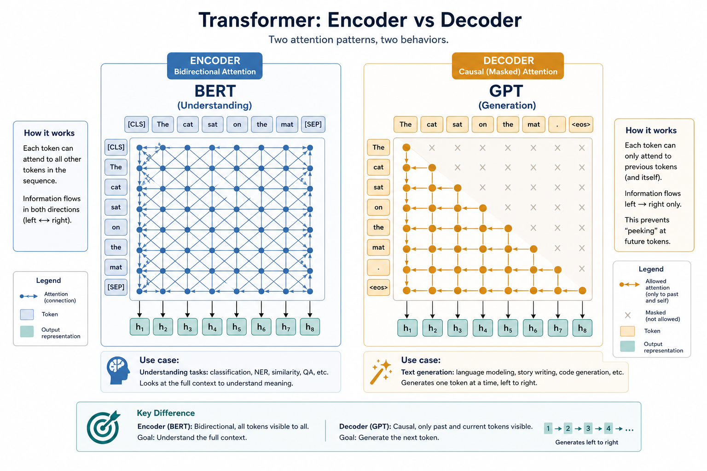

Transformer · attention, stacked
Many attention blocks in parallel — the frame behind BERT, GPT, and nearly every modern language model.
Why Transformers opened the LLM era
RNN / LSTM
Read word-by-word — slow on GPU, early context fades.
All attend at once
Every token sees every other token in parallel — better long-range links.
Chat · embed · MT
Encoders, decoders, and cross-attention all sit inside this frame.
Key ideas
Attention + FFN
Multi-head + ~4× expand FFN. BERT-base: 12×768×12 heads. Stack: syntax → entities → discourse.
Positional encoding
Sinusoidal / learned / RoPE·ALiBi. Without it “dog bites man” ≈ “man bites dog.”
O(n² · d) + Pre-LN
Full attention memory grows with n². Residual + LayerNorm; Pre-LN common today.
Keywords: encoder · decoder · multi-head · RoPE · KV cache · Read: notes/transformer.md
Encoder · decoder · both
| Kind | Job | Example | Masking |
|---|---|---|---|
| Encoder (BERT) | Read whole sequence → representations | Classification, embeddings | Bidirectional |
| Decoder (GPT) | Generate left → right | Chat, completion | Causal (future hidden) |
| Encoder–decoder | Map source → target | Translation, summarization | Self + cross-attention |
“The cat sat on the mat.”
Embed + position
6 tokens → X ∈ ℝ^{6×768}; add positional of same width.
Layer-1 attention
“sat” ≈0.35 on “cat”, ≈0.25 on “mat”; FFN mixes within each position.
Heads & causal
BERT: [CLS]/mean → labels. GPT: last token → vocab; future masked.
Self-attention inside one block

Every token queries keys in the same sequence — Q · K · V mixing in one layer.
Cross-attention for translation

Decoder queries attend to encoder keys/values — target looking at source.
Attention weights after softmax

Softmax turns raw scores into a distribution over tokens — then values are mixed.
Stacked attention + feed-forward

Depth builds abstraction: early layers syntax, later layers discourse and intent.
One encoder block, unpacked

Multi-head attention → residual → LayerNorm → FFN → residual — repeat N times.
Encoder (bidirectional) vs decoder (causal)

Full-sequence self-attention for understanding · left-to-right masking for generation.
Deeper dive
Scaled QKᵀ
softmax(QKᵀ/√d_k)V — √64≈8 stops logit saturation and dead gradients.
Causal −∞
Future → −∞ before softmax. Off-by-one leaks next token and fakes low perplexity.
Cross-attn
Q: T_tgt×d · K/V: T_src×d. Truncated source encodings kill MT quality.
KV cache
Reuse past K/V → O(n) per new token. Memory grows with context — long-chat bottleneck.
FFN vs attn
Attn ≈4d²; FFN often ≈8d² (dominates params). Attn dominates memory at long n.
HF heads
AutoModel vs ForCausalLM vs ForSeq2SeqLM — wrong head class is a common beginner bug.
When to choose what
| Situation | Prefer | Avoid / why |
|---|---|---|
| Classify / embed a sentence | Encoder or Sentence-BERT | Causal decoder without pooling — not trained for similarity |
| Chat / code / open gen | Causal decoder (GPT-family) | Encoder alone — cannot emit fluent L→R text |
| Translation / summarization | Encoder–decoder (T5, BART) | Encoder-only — no generative pathway |
| Need >4k–8k context | RoPE/ALiBi + long-ctx train; or chunk | Naive sinusoidal extension — poor extrapolate |
| On-device classify | DistilBERT / MiniLM encoders | 70B decoder “just for sentiment” |
| Ignores word order | Check positional / RoPE applied | Assuming attention encodes position alone |
Case Study
Explain why a chat model and a classifier need different Transformer “shapes” on the same English sentence.
Inputs
sentence "The cat sat on the mat." tokenized to ~6–8 BPE ids; compare BERT-base encoder vs a small causal GPT-style decoder.
Steps
encoder builds bidirectional states (token "sat" may attend to "mat"); pool [CLS]/mean → classification logits. Decoder at position of "sat" masks future "mat"; LM head predicts the next token distribution over the vocab (~50k).
Output
encoder path → sentiment/topic label; decoder path → continuation text. Same attention math, different mask + head.
Verify
causal mask off-by-one (future leak); context length truncation of the prompt start; wrong HF class (ForCausalLM vs ForSequenceClassification); O(n²) memory if you paste a huge PDF into one forward.
Lab Checklist
Sketch one encoder block: attention → residual → FFN → residual
Write the causal mask rule in one sentence and give a 4-token example matrix
Load an encoder checkpoint and a causal LM checkpoint; note which task heads exist
Run a short sentence through an attention visualization (lab demo or notebook)
Measure what happens when input length approaches the model max position
Compare parameter count of attention projections vs FFN for one layer (order-of-magnitude)
Pick encoder vs decoder for: (a) spam classify, (b) chat reply — justify in one line each
Read the positional encoding type on a modern LLM card (RoPE / ALiBi / absolute)
Easy to go wrong
Encoder ≠ decoder
Don’t expect a pure encoder to chat, or a causal decoder to be the best frozen embedder.
Context length
Attention is O(n²) — long docs need chunking or efficient variants.
Dropping position
Hack without positional info and order sensitivity breaks.
From tokens to a head
Wraps attention, embedding, and softmax into one complete model house-frame.
Where to go next
Attention
Q · K · V and the interactive demo.
Embedding
How tokens become coordinates in space.
Hugging Face
Pretrained Transformer checkpoints to load.
Read the note
then open attention.
notes/transformer.md — related demo: demos/attention.
Open note →